Better Blender: A Redesigned Smart IoT Blender
Autodesk Fusion 360 | Autodesk Inventor | Laser Cutting | Raspberry Pi
Project for ES91r at Harvard, Fall 2017
This project page documents an independent venture into product development during which I hope to explore all of the fundamental aspects of product R&D by building a smart blender from beginning to end. I hope to gain three things out of this project:
Improve as an electrical engineer - since electrical engineering is my concentration, I will take special care to build a smart blender that has electrical systems that are well-constructed and reflect my ability as a senior electrical engineering student at Harvard.
Improve as a mechanical engineer - I've had classes before relating to CAD and mechanical design, but none of those classes required me to build the entirety of a project in any sort of CAD software. This blender is entirely under my creative jurisdiction so the materials and prototyping in CAD are an opportunity to improve as a mechanical engineer.
Improve as a designer - a perfectly-engineered product won't sell unless the design is appealing. My goal is to design for usability as well as design for aesthetics. There are no heavily-involved theory-based design courses at the undergraduate level at Harvard, but I hope to incorporate elements of good design throughout the process (and I will point them out when I do!)
- Overview
- Project Planning & Schedule
- Mechanical Design
- 3.1 Prototype 1 in Autodesk Inventor
- 3.2 Prototype 2 in Fusion 360
- 3.3 Manufacturing Design
- Electrical Design
- 4.1 Motor Driving
- 4.2 Temperature Sensor
- 4.3 LEDs for Display
- Raspberry Pi & Programming
- 5.1 Operating System
- 5.2 Touchscreen
- 5.3 Python Program
- Final Thoughts
Contents
Overview
The Better Blender is an attempt to bring the Internet of Things to blender technology. Instead of push-buttons, the entire blender will operate off of a touchscreen that helps the user determine how to make things with the blender.
Project Planning & Schedule
Copy and paste from other website
Mechanical Design
The most significant amount of the work on this project turned out to be on the aspects related to building a housing to contain the blender. The hardest part of creating the blender body was not just determining the sizes and arrangements of the various parts, but rather preparing those parts for manufacturing and actually getting them manufactured. I went through several iterations that are documented below.
Prototype #1 in Autodesk Inventor
The first prototype for the body of the blender was based mainly around the measurements of an actual blender I took apart to examine the insides of. The blender was the cheapest model I could find on Amazon - a Black+Decker Counter-Top Blender that only cost $17.99 at the time of purchase. I spent a week taking apart this blender to understand some of how it worked before setting a course for building up my own blender.
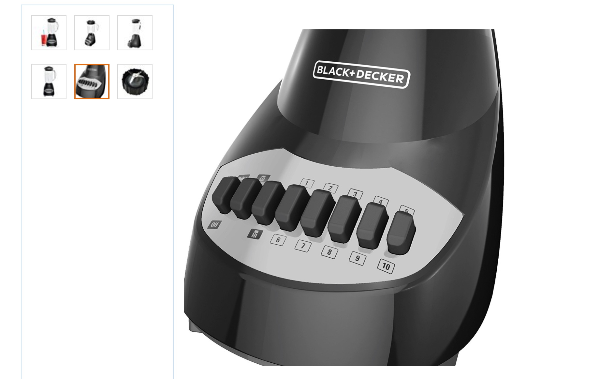The Black+Decker blender runs off of an AC motor and a TRIAC circuit for switching the current to the motor at various speeds. The entire switch housing is kept in a cleverly-engineered spring-loaded box that only allows for one button to be pressed at a time. There is a lot of space left in the bottom of the blender underneath the motor assembly to allow for cooling of the motor. For an AC motor like this one, there is a fan attached to the motor that blows air in and around the motor while it is operating.
Starting with the dimensions of the Black+Decker Motor, I went about creating a shell for the device in Autodesk Inventor. I chose Autodesk Inventor for making my first prototype because it functions very similarly to Solidworks and has a pretty effective export-to-3D print function. Most of my blender will be built through parametric modeling, so I don't need the sculpting and surface-modeling features provided by some other CAD programs.
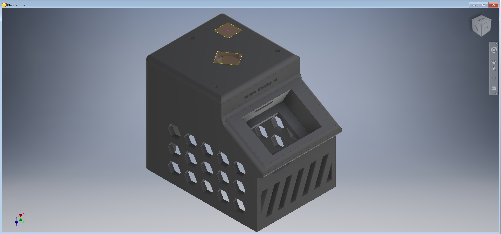I built up the side profile of the blender using two constraints to primarily drive the design - the first was the size of the motor. I'm using a XYD-6D 24V motor which requires approximately 5 square inches of mounting board to attach to. The "top" of the blender, where the pitcher sits, is sized with the intent of allowing the motor to attach to it. The second constraint was the size of the LCD touch screen. The screen measured 2.25" long meaning the "chin" that sticks out of the blender needed to be at least that long. Every other measurement is chosen for aesthetics.
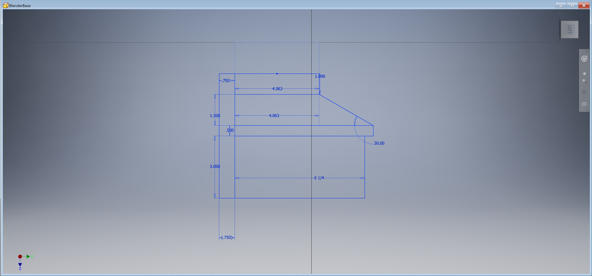Hexagonal slots are cut into the site of the blender in part to save on material costs, but also to allow ventilation to the motor during normal operation. The front "ridge" serves the same purpose, helping better airflow in to the motor.
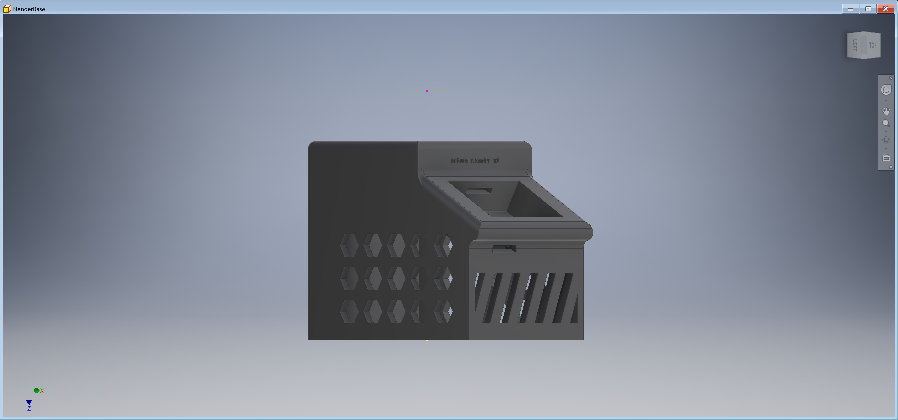The compartment into which the touchscreen is placed is engineered to allow the screen to comfortably press-fit into it. A slot at the back allows the wires from the GPIO part of the Raspberry Pi to exit and power the primary motor of the blender.
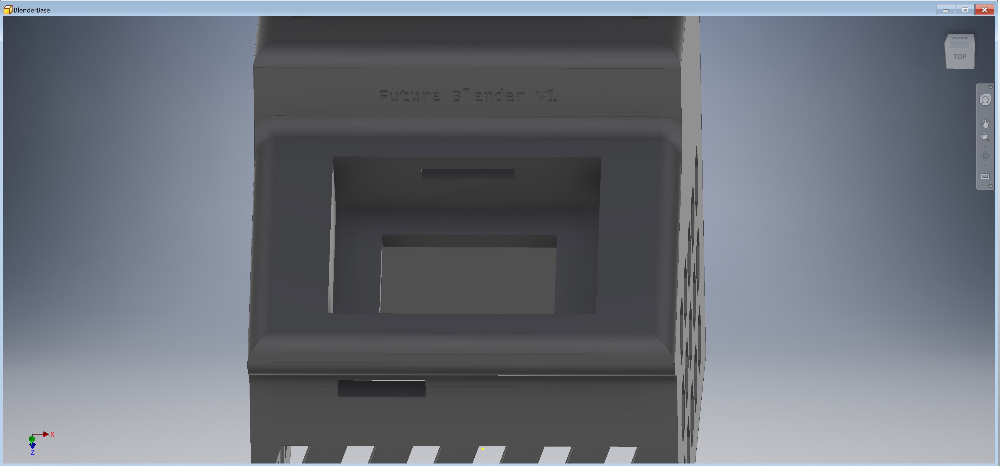This prototype served its purpose but was never manufactured at the actual scale of the device. My original intent was to 3D print the entire assembly. There are large-scale 3D printers that could print a device with the dimensions of 5" by 7" by 6" as my blender would have been, but cost and availability were concerns. I needed to simplify the design and reduce the size to make it more easily printable. I kept those considerations in mind when moving to the second prototype.
Prototype #2 in Fusion 360
A second prototype came with the use of a new CAD software: Fusion 360. I'd never used Fusion 360 for a large CAD project before this point but wanted to give it a try because it has very powerful tools for designing something for manufacturing. I started by building up the same model as prototype #1, but I knew I would have to shrink the depth of the model as well as the height in order to make it manufacturable on my rapid-prototyping equipment.
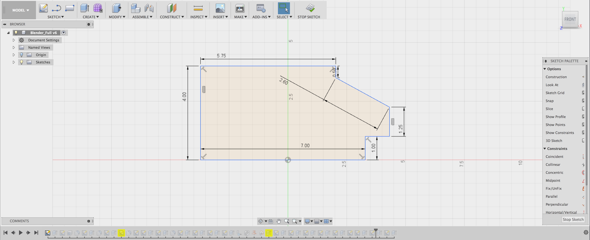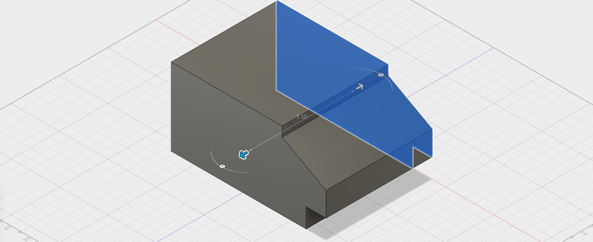
An opportunity presented itself during the design process - if I reduced the total 3D printed material down to just angle and corner brackets, I could complete my prints on the Formlabs Form 2 SLA printer and have much higher quality pieces than on a standard FDM printer. For the in-between portions, I could just laser-cut those from acryllic and the design would look the same. I got to work hollowing out the in-between portions to create something that would look very much like my final prototype.
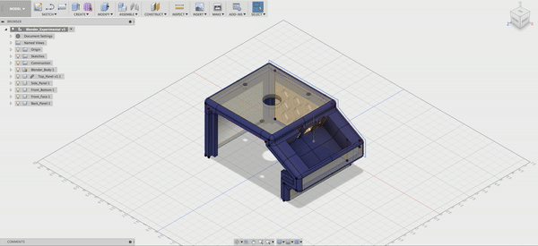The final stages of the creation process in the GIF above show two notable steps. The first was my decision to change the body material from Formlabs Grey Resin over to the Tough Resin which has a blue color. Since these angle brackets would be holding up the weight of the motor used in the blender, I thought it would be very important that they are strong. The Tough Resin has much better mechanical properties than the Formlabs Grey resin and, since the lab had it in stock, I decided to make the switch.
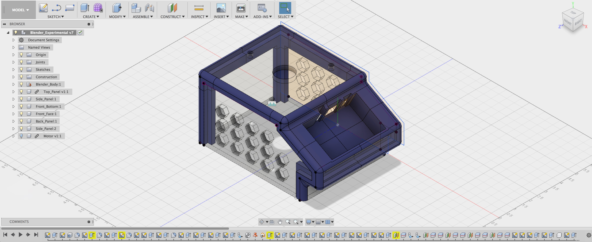Also notable is the decision to slice the model into 10 smaller parts. The bed size of the Formlabs Form 2 printer is only about 5 inches by 5 inches - smaller parts print much more easily than larger parts. There is also a lower failure rate when the parts are small. With these two things in mind, I simplified the "cuts" in the blender body and cut it into pieces to prepare for manufacturing.
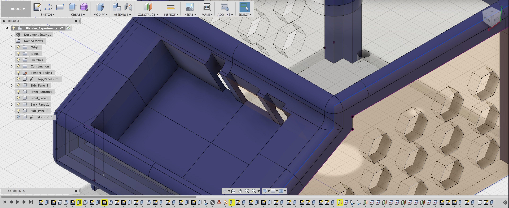The touchscreen slot has also undergone a transformation - instead of a single wide slot to fit all the outgoing wires, three specific cuts have been made to accomodate the audio jack, HDMI plug, and microUSB cable which will be used to power the device. The slits on the front of the device have been removed because the Z height has been reduced making them unecessary. The hexagonal cut-outs on the side of the blender remain as they were before, but now are cuts in acrylic instead of being 3D printed.
A final render of the CAD model is included below with the motor and touchscreen added in for fun: all ready for manufacturing now!
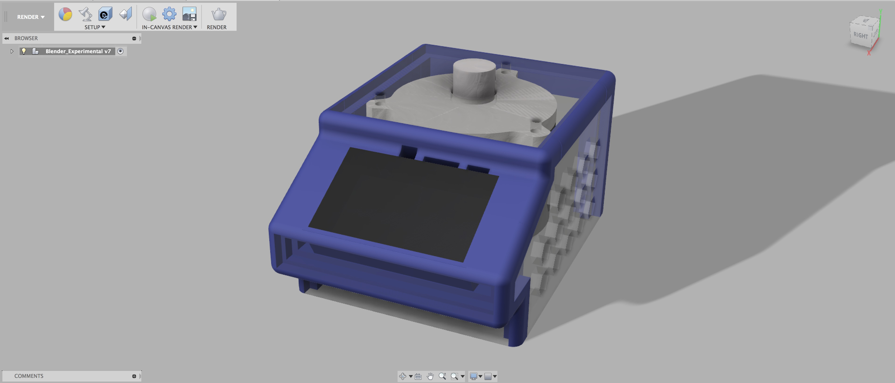